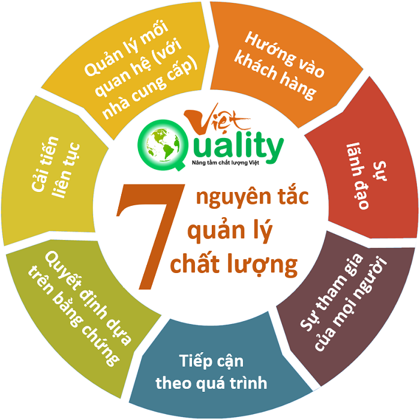

Khi nói đến tiêu thụ tài nguyên và gây ô nhiễm tại khách sạn, resort, yếu tố nào dưới đây là nguyên nhân chính?
Nếu bạn là nhà quản lý du lịch ở Đà Nẵng, giải pháp nào sau đây vừa giảm áp lực cho trung tâm, vừa mang lại lợi ích cho cộng đồng địa phương?
Xác định các rủi ro môi trường trước khi xây dựng. Điều chỉnh kế hoạch một cách có trách nhiệm nhằm tránh gây tổn hại cho hệ sinh thái và đa dạng sinh học. Đảm bảo phát triển phù hợp với văn hóa và nhu cầu của người dân.
Sử dụng thiết kế và vật liệu thân thiện với môi trường. Giảm tiêu thụ năng lượng và nước; tối thiểu chất thải và hài hòa với cảnh quan thiên nhiên; khuyến khích các phương pháp xây dựng bền vững.
Giới hạn quy mô và mật độ xây dựng. Ngăn ngừa việc sử dụng quá mức tài nguyên địa phương (nước, điện, xử lý rác). Giữ gìn cảnh quan và đa dạng sinh học. Hỗ trợ du lịch quy mô nhỏ, ít tác động hơn.

Quản lý lượng khách và sức tải. Giới hạn lượng khách tại điểm “nóng”. Áp dụng hệ thống đặt chỗ trước, giới hạn số người trong khung giờ cao điểm để giảm quá tải. Ví dụ: Bán đảo Sơn Trà – Đà Nẵng từng đề xuất giới hạn phương tiện & du khách vào các khung giờ cao điểm để bảo vệ voọc chà vá và hệ sinh thái.
Phân tán khách qua điểm mới. Khuyến khích phát triển du lịch sinh thái – cộng đồng ở các vùng ven. Ví dụ: Du lịch cộng đồng Hòa Bắc đang được thành phố hỗ trợ đầu tư, giảm áp lực lên trung tâm và các bãi biển.
Khuyến khích “Du lịch xanh – Net Zero”. Ưu đãi doanh nghiệp dùng năng lượng tái tạo, giảm phát thải carbon. Phân loại rác tại nguồn, giảm nhựa dùng một lần.
Tăng hài hòa xã hội và trải nghiệm du khách. Phát triển du lịch cộng đồng có trách nhiệm. Hỗ trợ người dân tham gia làm du lịch, chia sẻ lợi ích công bằng.
Net Zero (phát thải ròng bằng 0) là trạng thái mà tổng lượng khí thải nhà kính trong hoạt động sản xuất, kinh doanh là 0.